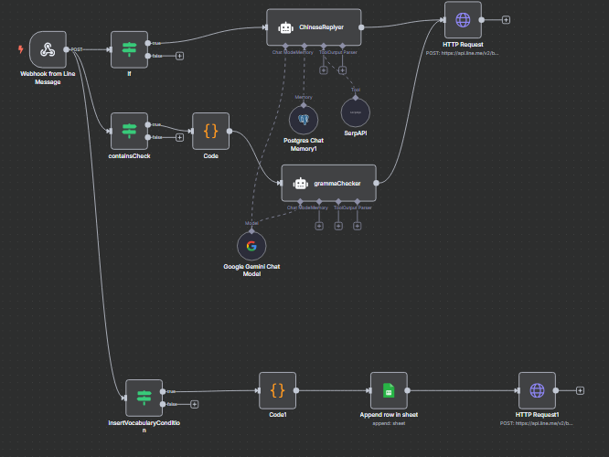
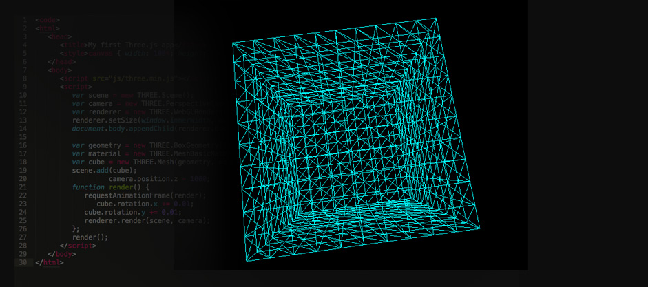
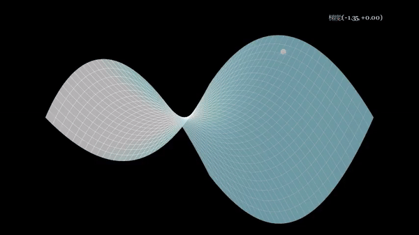

Work
近期熱衷於開發與研究
這裡展示我最近熱衷開發與研究的主題，包含 AI、前端框架、工作流自動化等，持續探索新技術與應用。

Line Bot
AI 問答、夜市營業表、台灣各地區天氣、英文對話生成...

n8n 工作流
擷取email訊息、google sheet串接、Postgres memory、SerpAPI...

前端框架學習
React、next.js、Vue、three.js

AI
LLM finetuning、RAG、Vector DB...